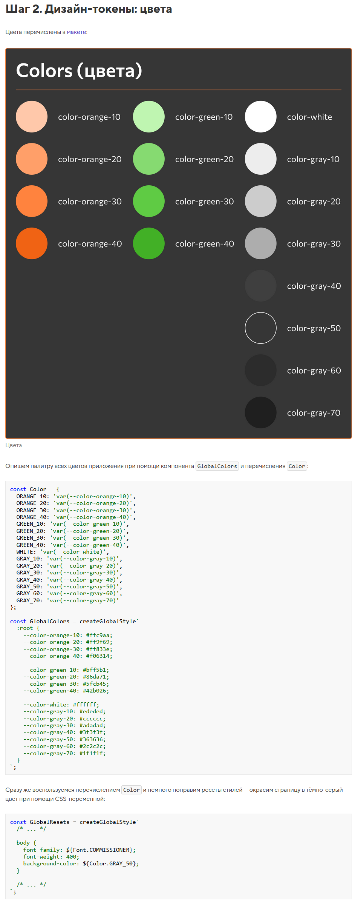

<a href="https://www.figma.com/file/V4qJfPIOmteC5ona7uZKf4/%D0%92%D0%B5%D0%BB%D0%BE%D1%81%D0%B8%D0%BF%D0%B5%D0%B4%D1%8B-(%D1%83%D1%87%D0%B5%D0%B1%D0%BD%D1%8B%D0%B9-CSS-in-JS)?node-id=305%3A3651">Макет</a><br>
<br>
<a href="https://codesandbox.io/s/uchebnyy-proekt-dizayn-tokeny-i-resety-stiley-shag-2-4env5u?file=/src/tokens/colors.jsx">Код демонстрации — шаг 2</a><br>
